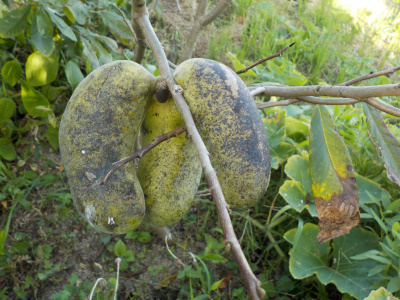
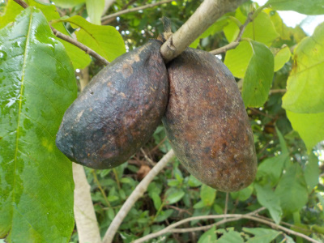
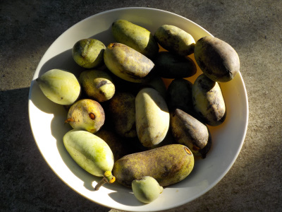
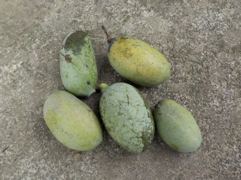
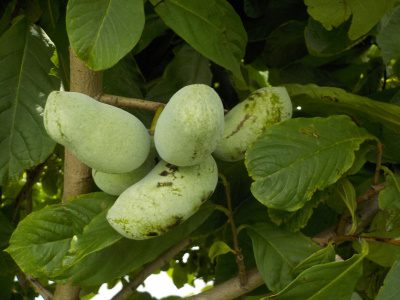
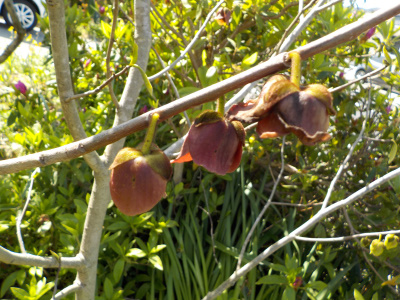
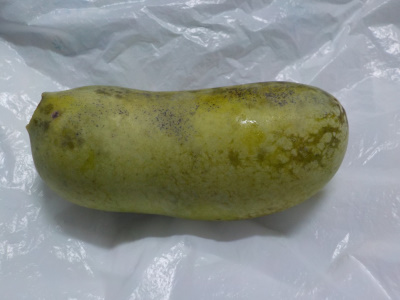
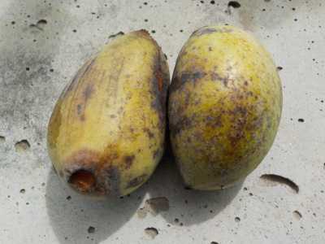
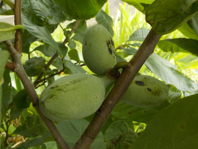
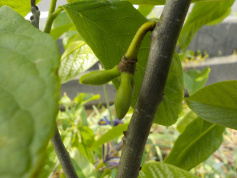

遊びで植物を育てよう
2021/10/03
まだ熟れないポポー

ポポーの収穫がほぼ終わりました。これは最後に残った3個です。
触ってみたところ、まだ硬かったです。
収獲し忘れないようにしたいですが、3個なので忘れてもいいかな。
【ポポーTOP】 【果物TOP】 【園芸TOP】
2021/09/26
ポポーが木に付いたまま腐敗

ポポーは熟れたら実が落下するんですが、落下しないで萎れたものがありました。
こんなのもあるんですね。
ちょっと触るながいやなので、このまま放置します。
種が落ちで芽がでそうだな。
【ポポーTOP】 【果物TOP】 【園芸TOP】
2021/09/19
ポポーの実を沢山収穫しました。

熟れて落下したポポーを拾いました。
これだけ採れたら十分かな。（まだ木にもあります。）
種を蒔いて育てて良かったです。
【ポポーTOP】 【果物TOP】 【園芸TOP】
2021/08/21
ポポーの実が落ちていました。

台風とか豪雨があったせいか、ポポーの実が落ちてました。
ちょっと黄色っぽいのは甘い匂いがしました。
でもまだ食べれないんだろうな。
9月になったら食べれるかな？なってみないと分からないですね。
【ポポーTOP】 【果物TOP】 【園芸TOP】
2021/07/03
ポポーの実がぎっしりです。

一か所からポポーの実が沢山出来ています。
間引いたほうが良かったのかな？
大きい実の方が多分食べやすいですよね。でも大きい実は重みで台風とかで落ちそうな気もするな。
ポポーの木の周りは、なんとなく甘い香りがしていました。
今年は実が出来るのが早いかも。
【ポポーTOP】 【果物TOP】 【園芸TOP】
2021/04/10
ポポーの花が咲きました。

今年は実生のポポーの木3本に花がつきました。
去年は1本だけで実が少なかったですが、今年は沢山出来そう。
ポポーは自家受粉だと美が少ないって書いてあるホームページがありますが、実生は遺伝子が違うので受粉の確率が上がるんじゃないかと期待しています。
3本それぞれ違う味で違う大きさのポポーが出来ると面白いです。
【ポポーTOP】 【果物TOP】 【園芸TOP】
2020/09/29
今年採れたポポーで一番大きいものは8.5センチでした。

今年一番の大きさのポポーを収獲しました。
まだ青いですが、毎日熟れるのを見るのは面倒なので先に採りました。
多分明日か明後日には食べごろになるでしょう。
大きさを測ったら8.5センチでした。ちょっと小さいです。
ポポーはクセがある味なので、少し小さいくらいが丁度いいかなと思いました。
【ポポーTOP】 【果物TOP】 【園芸TOP】
2020/09/13
ポポーが完熟しました。

ポポーの実が木から落ちました。
マスカットみたいなバナナみたいな甘いいい匂いです。
こってりした濃い甘さで美味しかったです。
ポポーを食べたのは、この実が出来た木の種を採った実以来なので、とっても久しぶりです。
【ポポーTOP】 【果物TOP】 【園芸TOP】
2020/07/12
ポポーの実が只今5センチくらいです。

実生のポポーですが、ちゃんと実が育っているようです。
只今5センチくらいなので、収穫時にはそこそこ大きくなっているんじゃないでしょうか。
収穫が楽しみです。
【ポポーTOP】 【果物TOP】 【園芸TOP】
2020/05/17
ポポーに実が出来ていました。

花は沢山咲いていたんですが、実は2房しか確認できませんでした。
最初の年はこんなもんなのかな。
まだ花が咲いているので、それらに実が付くのを期待します。
【ポポーTOP】
【果物TOP】
【園芸TOP】
2020/04/05
ポポーに花がつきました。
2018/01/14
ポポーの植え替えに挑戦。
2015/09/27
鉢植えのポポーよりも地植えのポポーが育っていました。
2015/04/25
枯れ木ポポーから芽が出ました。
2014/11/16
ポポーの葉っぱが全部落ちました。
2014/11/08
ポポーは紅葉しているのかな？。
2014/08/31
ポポーが大きくなったので植え替えしました。
2014/07/28
ポポーの葉っぱがやっと出た。
2014/07/05
ポポーの茎が出てる！
2014/04/20
ポポーの種まき。
【ポポーTOP】
【果物TOP】
【園芸TOP】
ポポーはクセがあるので沢山は食べれないな。
【おいしいものを食べよう。】【しっかり寝よう。】
【ソロ活をしよう!】【季節感のあることをしよう。】【動画視聴はほどほどに。】【当サイトの全てのコンテンツは無断転載禁止です。】